Cinema about the future unfolding now.

STUDIO &
.FOUNDATION
We are a documentary film Studio and Foundation exploring people, culture and phenomena shaping the future.
FFF operates at the intersection of three disciplines. This is where films are created that capture audience interest, strengthen brand reputation and value, and preserve its story for future generations.
- DOCUMENTARY FILMMAKING
- BRAND STRATEGY
- FOUNDER STORYTELLING
Studio
We build brand reputation through documentary film.
We bring together brand strategy, documentary filmmaking and film development strategy, turning the story of the founder and the company into a long-term reputational asset.
Brand Story
For us, this is the instrument: a powerful human story that reveals the brand and the founder’s personality and becomes the foundation of the film narrative.
Reputation
For us, this is the result: trust, recognition and long-term brand value built through the life and distribution of the film.
Film Development Strategy
For us, this is the mechanism: a service that uses international distribution and targeted film activation to reach different audiences and improve the brand’s commercial performance.
Explore → Create → Share
Igor Shmelev · Marina Kazakova · Ivan Ershov